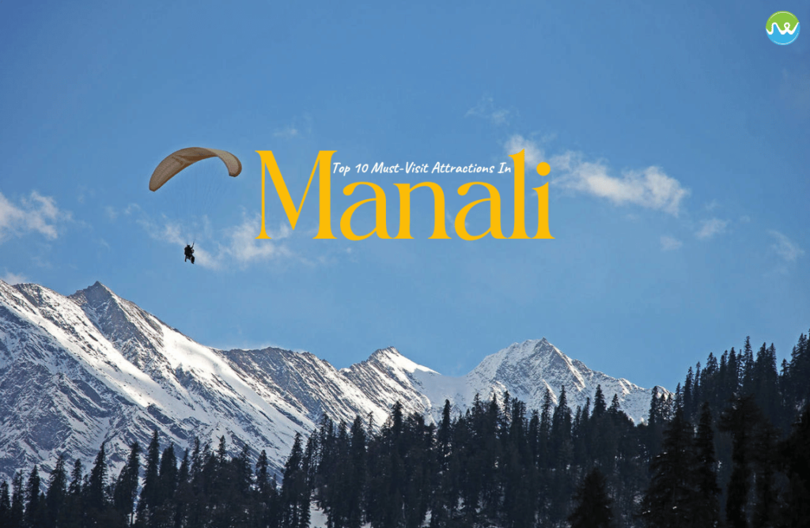
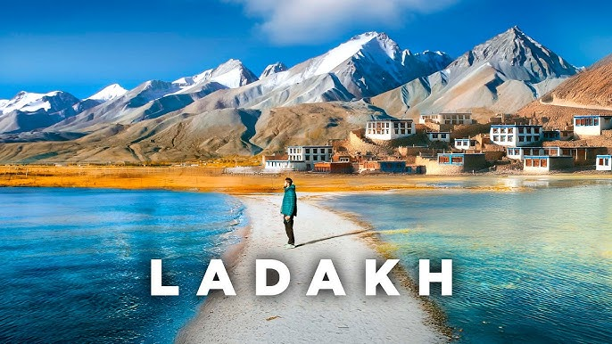

About This Page
This is a sample HTML5 webpage assignment that demonstrates semantic elements.
My Favorite 5 Mountain Destinations
- Shimla
- Manali
- Ladakh
- Darjeeling
- Nainital
Short Descriptions of These Places
-
Shimla (Himachal Pradesh): Known as the "Queen of Hills," Shimla offers a refreshing escape with colonial-era charm and scenic beauty.

Shimla -
Manali (Himachal Pradesh): A popular destination for adventure activities like trekking, river rafting, and skiing, with stunning views of the Himalayas.
Manali -
Ladakh (Jammu & Kashmir): A high-altitude desert region with breathtaking landscapes, monasteries, and opportunities for trekking and adventure.
Ladakh -
Darjeeling (West Bengal): Famous for its tea plantations, the iconic Darjeeling Himalayan Railway, and views of Kanchenjunga, the third-highest peak in the world.

Darjeeling -
Nainital (Uttarakhand): Surrounded by mountains and dotted with lakes, Nainital offers a tranquil escape with attractions like the Naini Lake and Naina Devi Temple.
Nainital